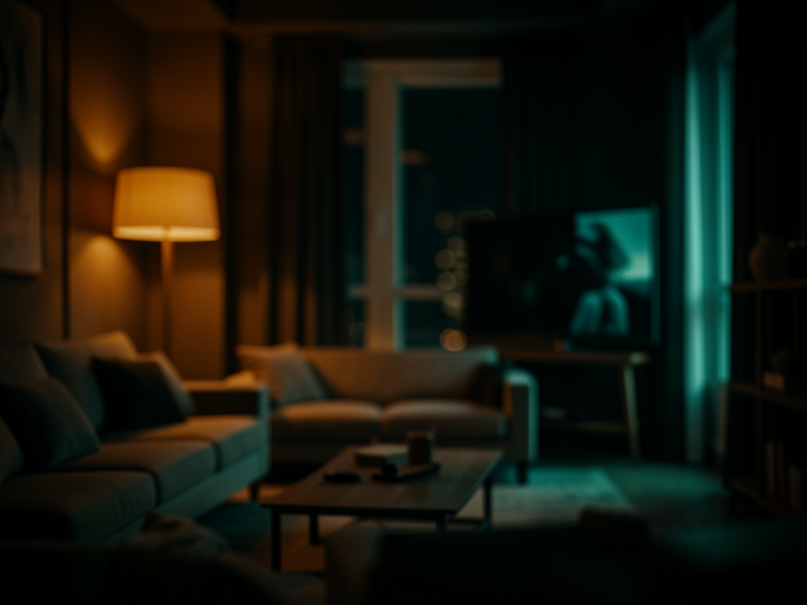

Você envia o ambiente pronto. A skill gera o "antes da obra" e monta o time-lapse antes→depois, com a mesma câmera e a mesma arquitetura.

Um único arquivo SKILL.md orquestra o fluxo inteiro: análise da imagem, geração do "antes", checagem de consistência e render do vídeo. Sem mover arquivo entre ferramentas na mão.
Basta a foto ou render do ambiente já finalizado. O "antes" é gerado — você não precisa ter a foto da obra.
Câmera, perspectiva, paredes, janelas e pé-direito são preservados. Só o estágio da obra e os acabamentos mudam.
Operários, poeira, obra em ritmo acelerado e o ambiente se completando — com câmera fixa do começo ao fim.
Quatro etapas encadeadas. A checagem de consistência é um portão: se o "antes" saiu com outro ângulo ou outro layout, a skill regenera antes de gastar uma geração de vídeo.
Tipo de ambiente, posição e altura da câmera, perspectiva, dimensões, aberturas, piso, mobiliário, materiais, direção da luz e estilo.
GPT Image devolve o mesmo ambiente como casca de obra: paredes de cimento, teto cru, piso nu, sem mobília nem acabamento.
Higgsfield Seedance 2.0 Mini (via MCP) recebe o "antes" como @image1 e o finalizado como @image2 e gera a transformação.
A skill não substitui gerador por conta própria: se o Higgsfield MCP não estiver disponível, ela para depois das imagens e avisa.
Claude Code (ou Codex) lendo a pasta de skills do projeto.
# instalar a skill no seu agente cp -r skills/virtual-staging-video ~/.claude/skills/
Acesso ao GPT Image para gerar a imagem "antes da construção".
# a skill chama o gerador de imagem do seu agenteMCP do Higgsfield configurado, com o modelo Seedance 2.0 Mini disponível.
# confira que o MCP responde antes de rodar /mcp
Do clone ao MP4. Os arquivos saem todos em output/.
Ele já traz a skill, a pasta de entrada e a de saída.
git clone https://github.com/inematds/vsvideo-skill cd vsvideo-skill
Se preferir usar a skill em qualquer projeto, copie-a para a sua pasta de skills. Trabalhando dentro do repo, o agente já a encontra.
cp -r skills/virtual-staging-video ~/.claude/skills/
Uma foto ou render do interior já finalizado. Também dá para anexar direto no chat.
cp ~/Downloads/sala.png input/interior-design.png
Abra o agente na pasta e faça o pedido em linguagem natural — a skill dispara pelos gatilhos.
claude > faz o vídeo de reforma dessa imagem
Olhe output/before-construction.png: mesma câmera, mesmas paredes e aberturas. Se o layout mudou, peça para regenerar — a geração de vídeo é a etapa cara.
> o ângulo mudou, regenera o antes
Três saídas: o "antes", o "depois" e o time-lapse.
output/before-construction.png # casca de obra output/completed-interior.png # o ambiente pronto output/renovation-video.mp4 # o time-lapse
O escopo atual é um ambiente por rodada, com um vídeo por par de imagens.